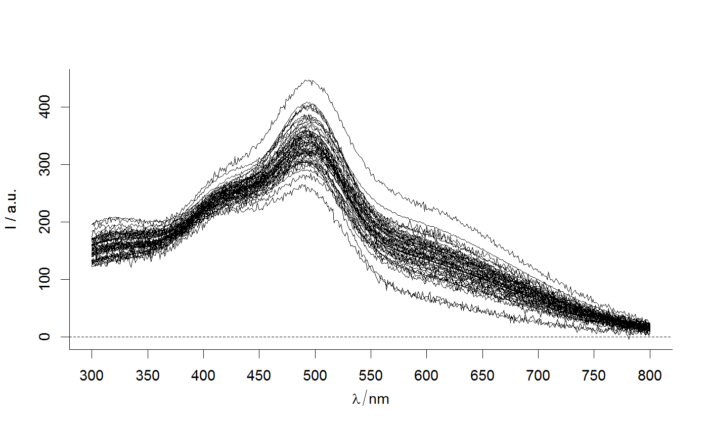
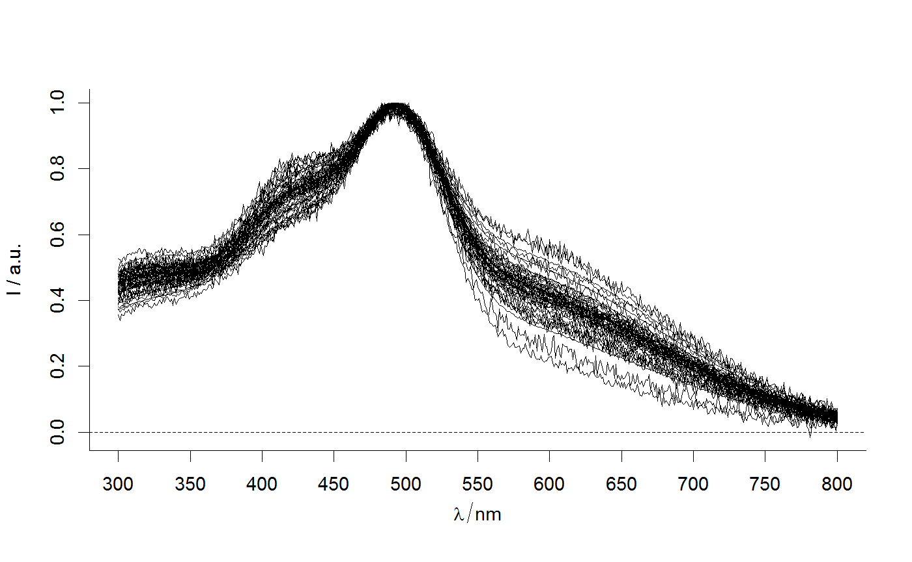
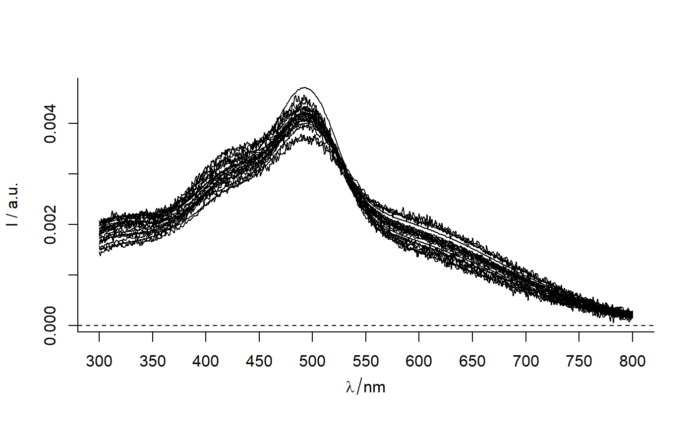
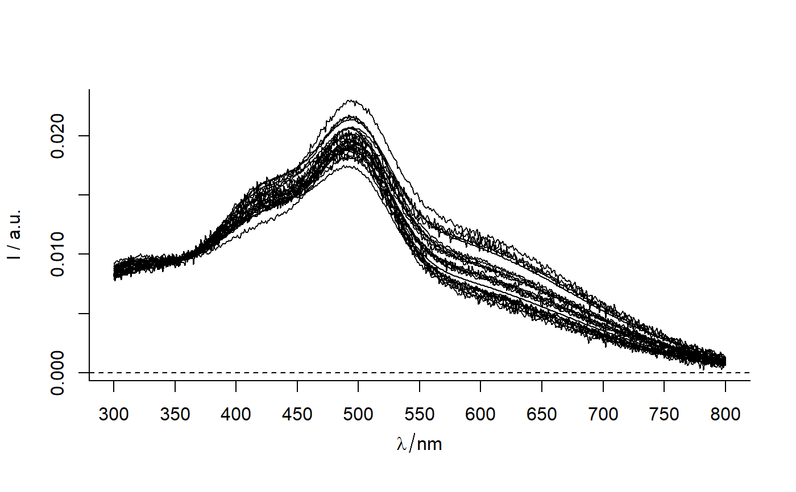

Normalize spectra
Convenience function which applies a predefined way of
normalization for spectroscopic data in a hyperSpec object.
sp_normalize(sp, norm = "max_I", in_range = min ~ max)
Arguments
| sp |
|
|---|---|
| norm | ("I" | "I_max" | "I_mean" | "I_at_510" | "area" | "max" | "mean" ) a way of normalization. |
| in_range | (numeric | formula) either a single value or a range (e.g. 300~350)
of wavelengths to be used for normalization.
Default is |
Value
sp with normalized spectra (sp@data$spc).
Examples
library(magrittr) Spectra2 %>% plotspc()#> Warning: Number of spectra exceeds spc.nmax. Only the first 50 are plotted.Spectra2 %>% sp_normalize() %>% plotspc()#> Warning: Number of spectra exceeds spc.nmax. Only the first 50 are plotted.Spectra2 %>% sp_normalize() %>% plotspc()#> Warning: Number of spectra exceeds spc.nmax. Only the first 50 are plotted.Spectra2 %>% sp_normalize("I", 720) %>% plotspc()#> Warning: STATS is longer than the extent of 'dim(x)[MARGIN]'#> Warning: Number of spectra exceeds spc.nmax. Only the first 50 are plotted.Spectra2 %>% sp_normalize("area") %>% plotspc()#> Warning: Number of spectra exceeds spc.nmax. Only the first 50 are plotted.Spectra2 %>% sp_normalize("area", 300~400) %>% plotspc()#> Warning: Number of spectra exceeds spc.nmax. Only the first 50 are plotted.